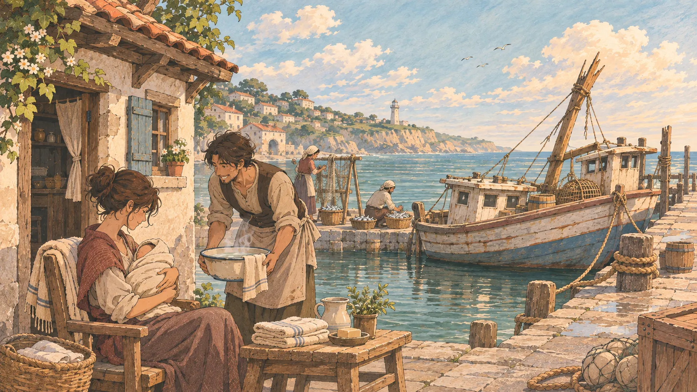

다음 장면까지
한 사람으로 태어나, 한 바다를 살다
이름 없는 삶에도
돌아올 이야기가 있다.
이름과 출신을 직접 정하거나 운명에 맡기세요. 유년기의 사건을 지켜보다가, 마침내 내 몫의 선택을 하게 됩니다.
다섯 종족 중 하나로 태어납니다. 출생 능력에는 종족값과 개인차가 반영되며, 소속은 직접 고릅니다.
파일을 직접 열면 게임이 작동하지 않습니다. 이 폴더에서 npm run dev를 실행한 다음 http://127.0.0.1:4173/으로 접속하세요.
태어난 해 · 0세
같은 시기 원작 소식

한 생애의 기록
WANTEDDEAD OR ALIVE
- 태어난 곳
- 모드
- 마지막 소속
- 개인 목표
- 악마의 열매
- 패기
- 마지막으로 익힌 힘
- 종합 성향
- 남긴 인연
- 거쳐 온 항로